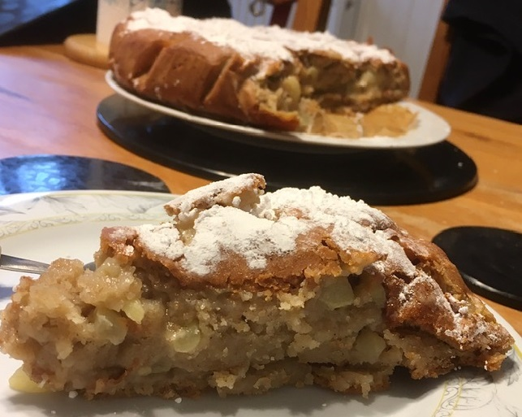

Apple Sponge
Ingredients:
-
3 Cups of Flour
-
2 and 1/2 tsp of Baking Powder
-
1/2 tsp of Baking Powder
-
2 tsp of Cinnamon
-
1/2 tsp of Fine Salt
-
144g of Yogurt
-
1/2 Cup of Sugar
-
1 Cup of Unsweetend Plant Milk
-
5 tbsp of Liquid Oil
-
1 tsp of Apple Cider Vinegar
-
1 tsp of Vanilla Extract
-
5 Medium Apples

Method:
-
Peel, core and chop the apples.
-
Mix all the wet ingredients in a bowl.
-
Mix all of the dry ingredients in a seperate bowl.
-
Mix all of the ingredients together but don't over mix otherwise the cake won't be as fluffy as needed.
-
Add the apples to the bowl and stir it through the batter.
-
Spoon into your prepared pan and sprinkle with granulated sugar.
-
Put it in the oven and bake for 45-50 minutes, depending on the size.
-
Wait at least 10 minutes before taking the cake out of the pan and let it cool before cutting.